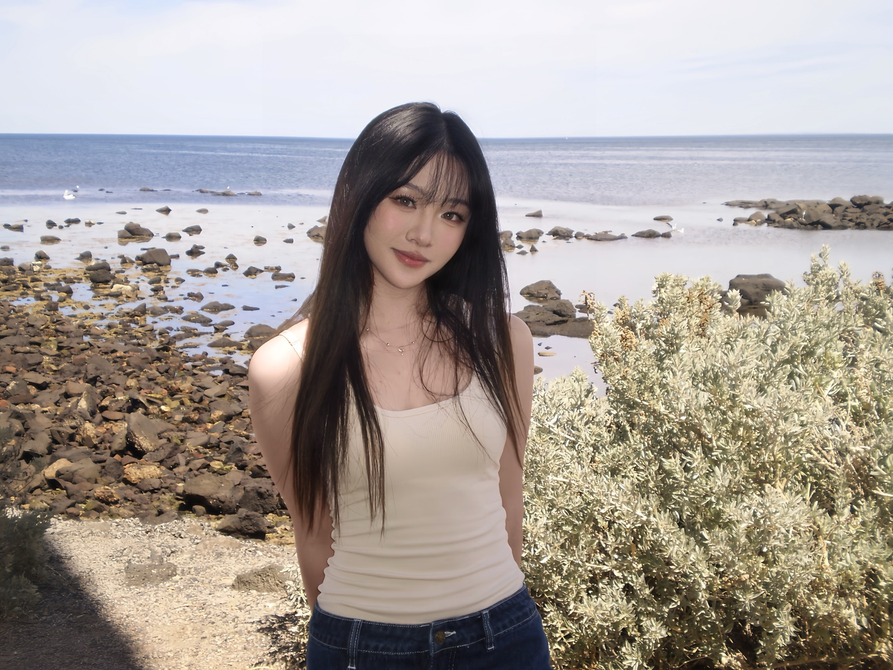
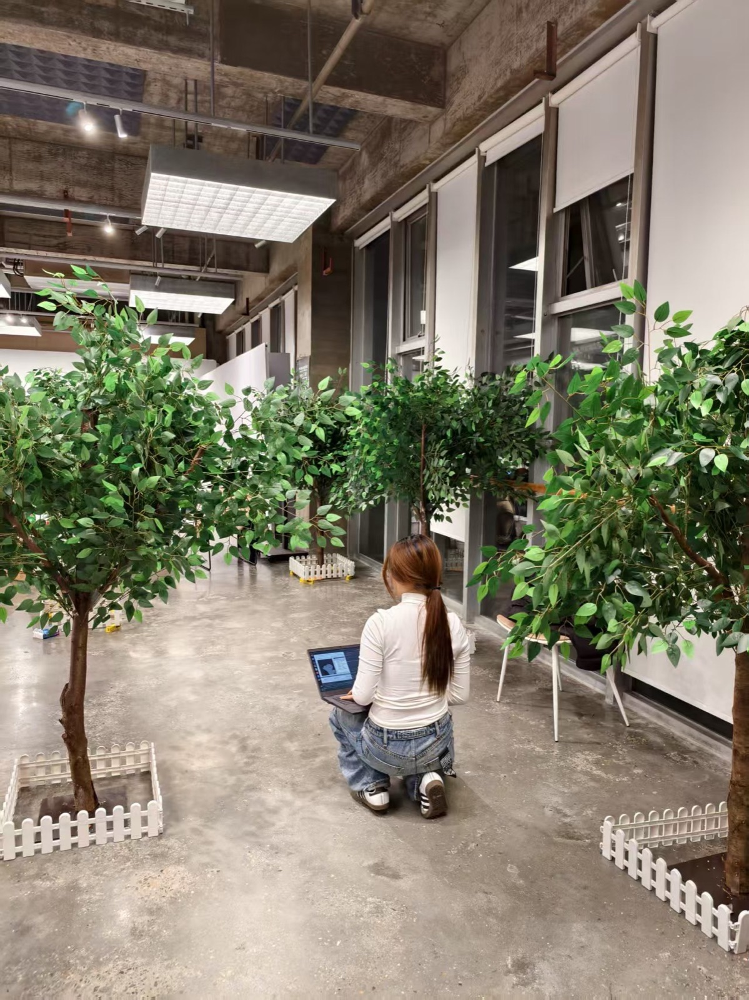
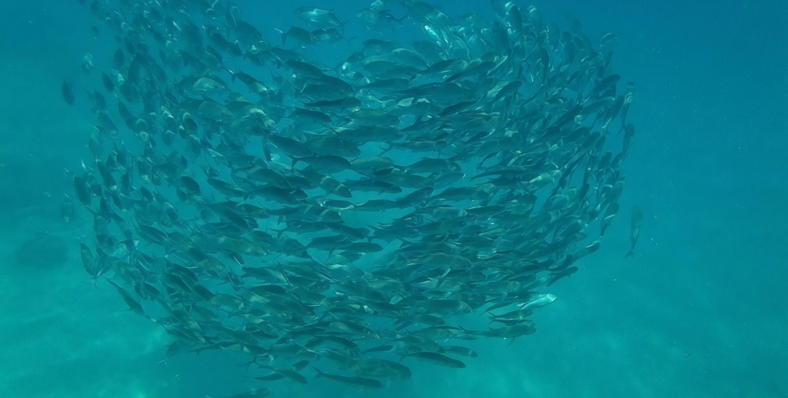
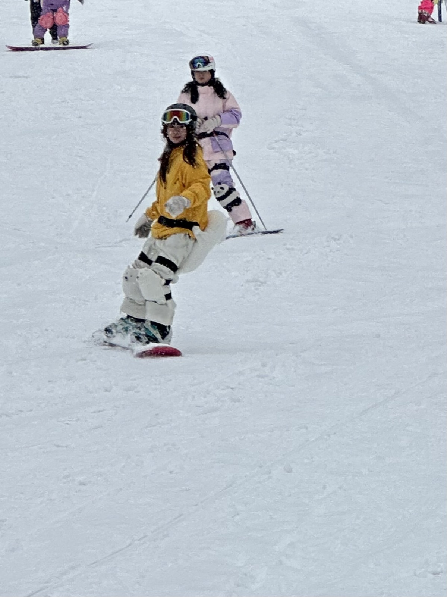
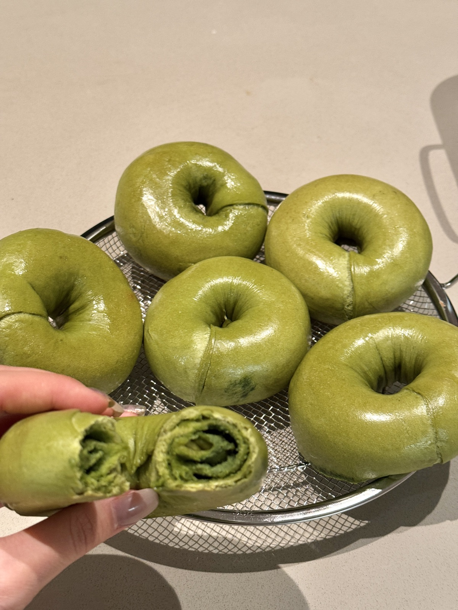
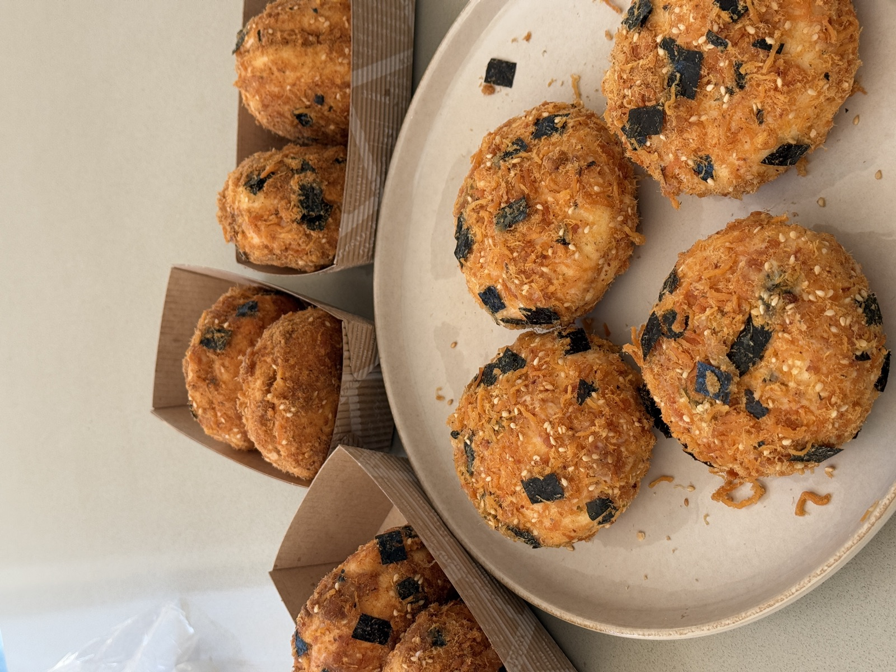
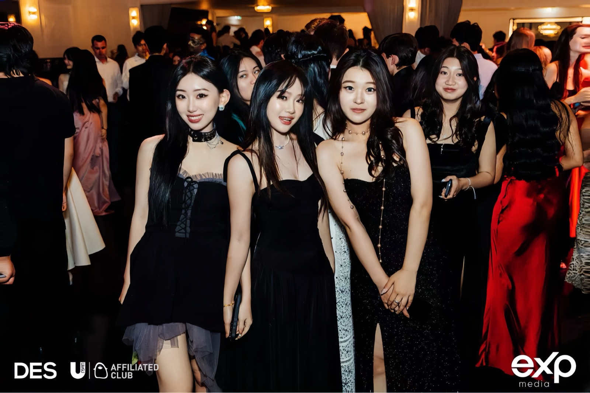
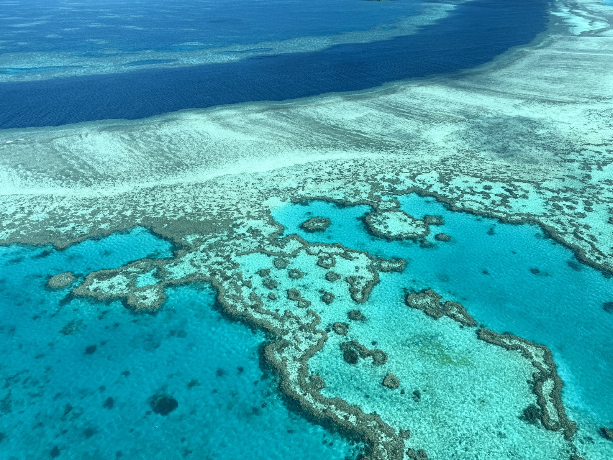
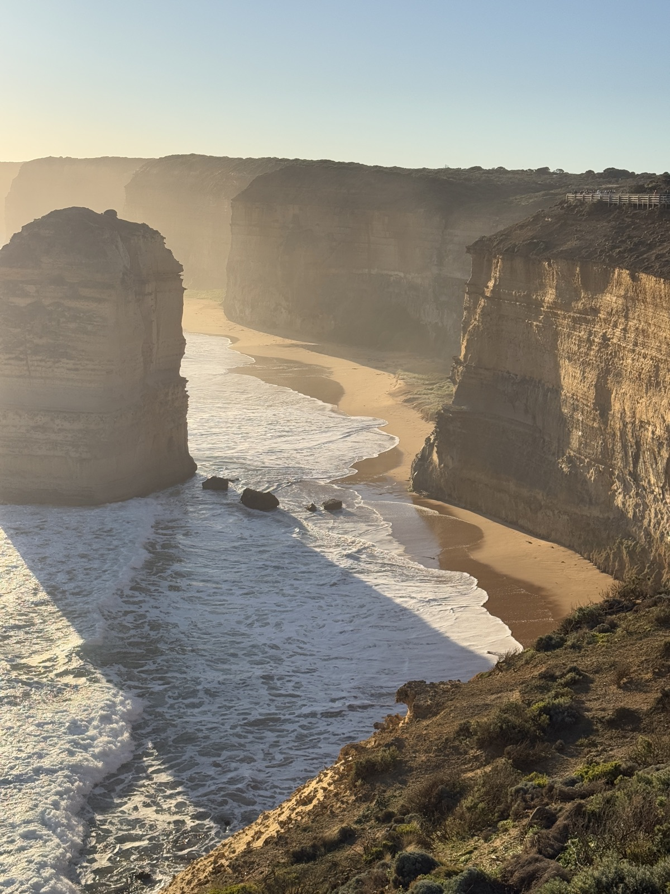
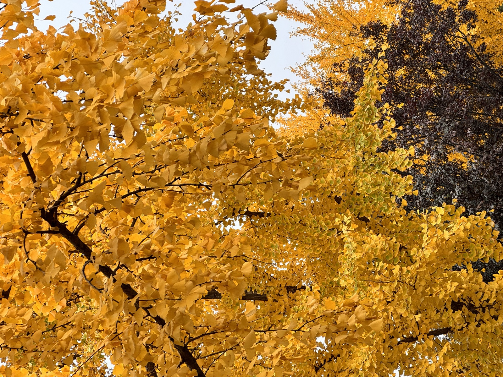

ABOUT / QIUYAN LAI
Hi, I’m Yannis.
I’m an interaction designer exploring the space between people, technology, and everyday experiences.
My work spans digital interfaces, services and physical prototypes. Away from the screen, there’s baking, time outdoors, and places to explore.
01/Me

02/Behind the work

03/Sports


04/Baking


05/Community

06/Adventures


